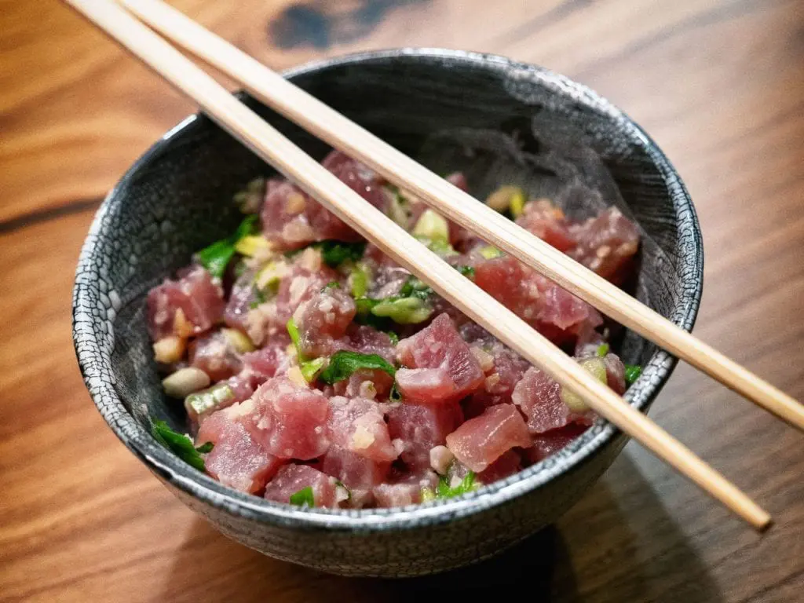

Ahi Tuna Poke

Description
Great tuna that can be consumed raw. This can be made really fast with the right ingrediants and is incredibly delicious.
Ingrediants
- 1 tablespoon white soy sauce
- 2 teaspoons untoasted sesame oil
- 1 teaspoon rice wine vinegar
- 1/4 teaspoon yuzu juice
- 2 scallions, light and dark green parts, sliced thinly on the bias
- 1 tablespoon dry-roasted macadamia nuts
- 8 ounces ahi tuna, cut into 1/2-inch cubes
Steps
- Whisk together the white soy sauce, sesame oil, rice wine vinegar, and yuzu juice in a medium bowl.
- Add the scallions and macadamia nuts, followed by the tuna, and fold together. Marinate for 15 minutes at room temperature before serving.
credit: Altonbrown.com